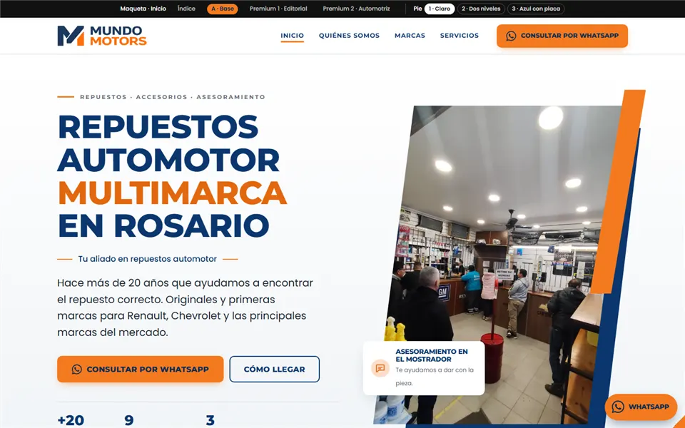
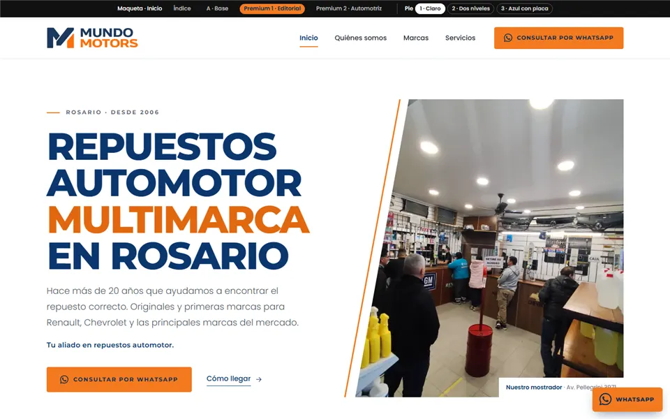
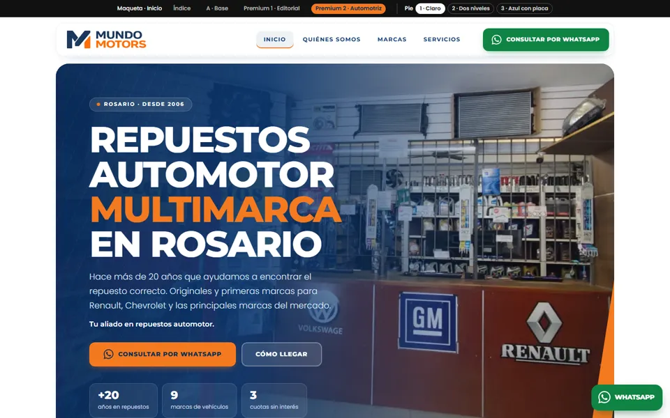

Respaldo
A · Base
La opción A elegida, con las correcciones aplicadas. Queda como respaldo y no se modifica más.
Ver baseWalter eligió el 09/11 la Premium 2 · Automotriz con el pie 1 · Claro, y los ajustes se hacen sobre esa versión. La A base y la Premium 1 quedan como referencia. En la barra negra de arriba de cada página se puede cambiar el pie.

La opción A elegida, con las correcciones aplicadas. Queda como respaldo y no se modifica más.
Ver base
Misma línea, con más aire, tipografía más grande y líneas finas en lugar de bloques.

Encabezado flotante, consulta rápida sobre la portada y líneas tipo «velocidad». Ajustes pedidos por Walter:
Las tres usan el logo del encabezado. Walter eligió la 1 · Claro, que es la que se ve por defecto.
Fondo gris claro y textos en azul. Es la de máximo contraste para el logo.
Ver en Premium 2Franja blanca con logo y contacto. Debajo, franja azul con pagos, menú y aclaración legal.
Ver en Premium 2Todo azul, con el logo sobre una placa blanca con margen de respeto.
Ver en Premium 2Cada pantalla es la página real a 390 px de ancho. Se puede deslizar adentro.
contenido-inventado.md.